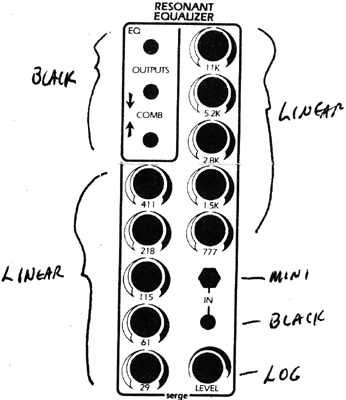
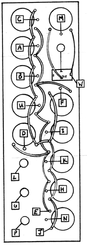

|

Resonant EqualizerParts for Kit
 The wires to pads J and E should be loosely twisted together. If a mini-plug is connected, the input from the banana Jack is automatically disconnected. Test the EQ using Pink Noise from the NOI module. Alternately, a low frequency sawltooth wave may be used. Apply the signal to the IN Jack and monitor the output. With all the knobs set at a center (straight up position) the top OUTPUT should be nearly the same sounding as the input signal, As individual bands are turned up, the corresponding frequencies will become prominent, and when the knob is all the way clockwise, the frequency band will have a resonant quality. If the knob is turned down, then that band will be attenuated, and in the fully counter-clockulise position there will be a deep "notch" which should be easily detected. If all knobs are centered, then the alternate band outputs (marked with the up and down arrows) will be a sum of the alternate bands. If the knobs are turned up or down, then both alternate outputs will be affected.
|